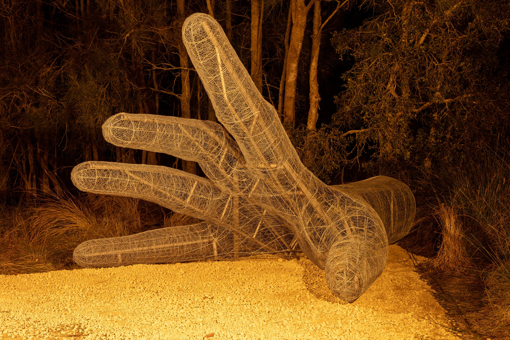
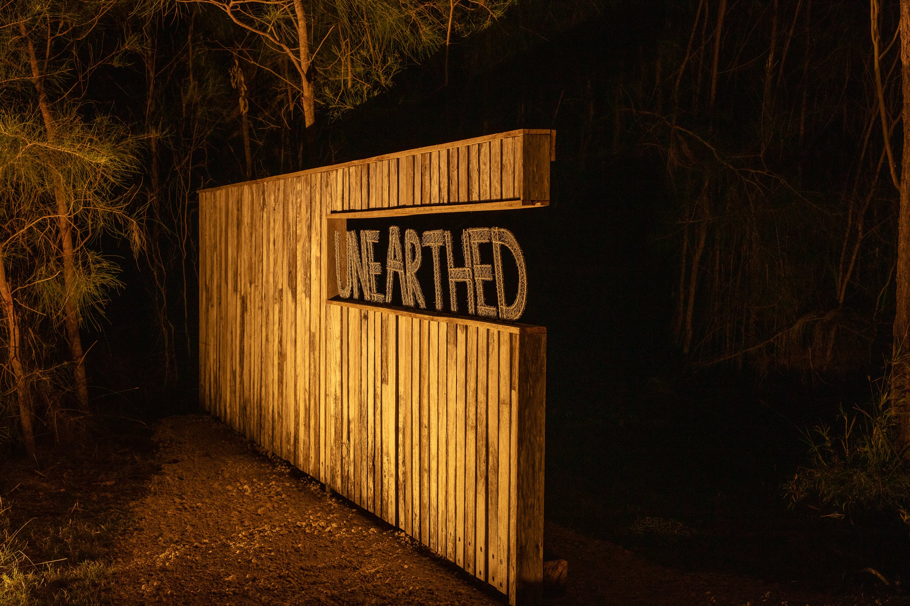
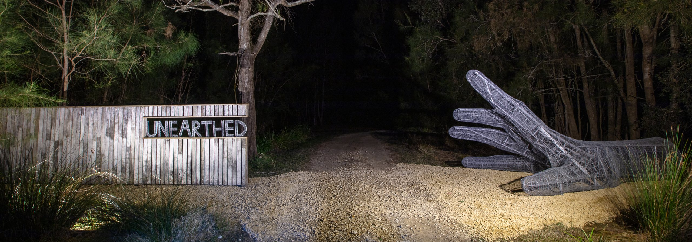
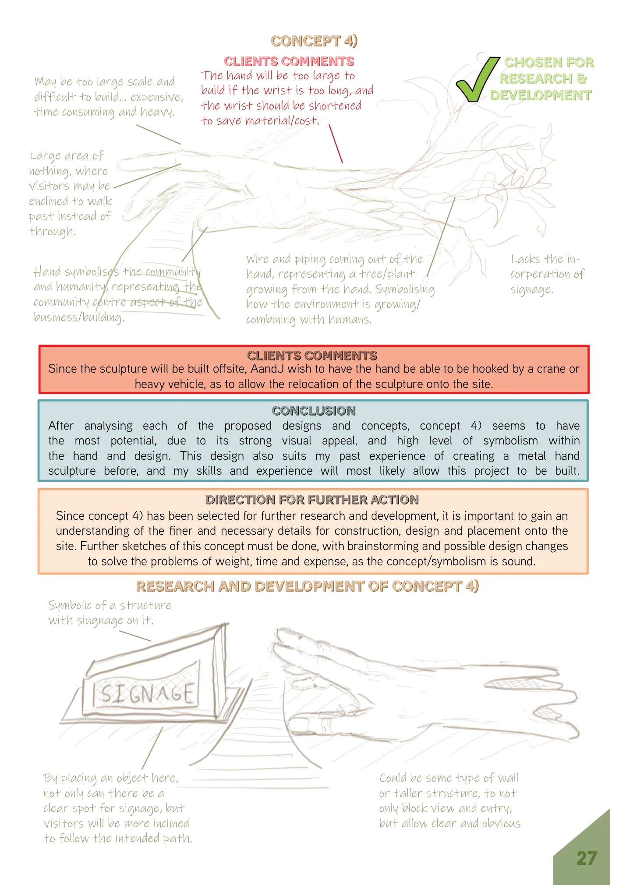
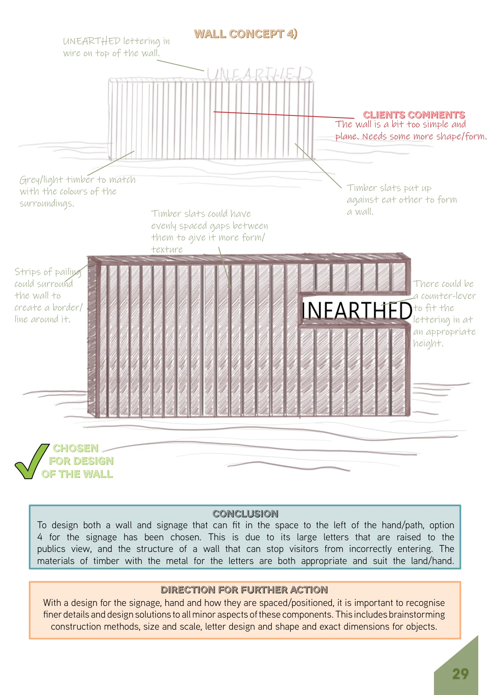
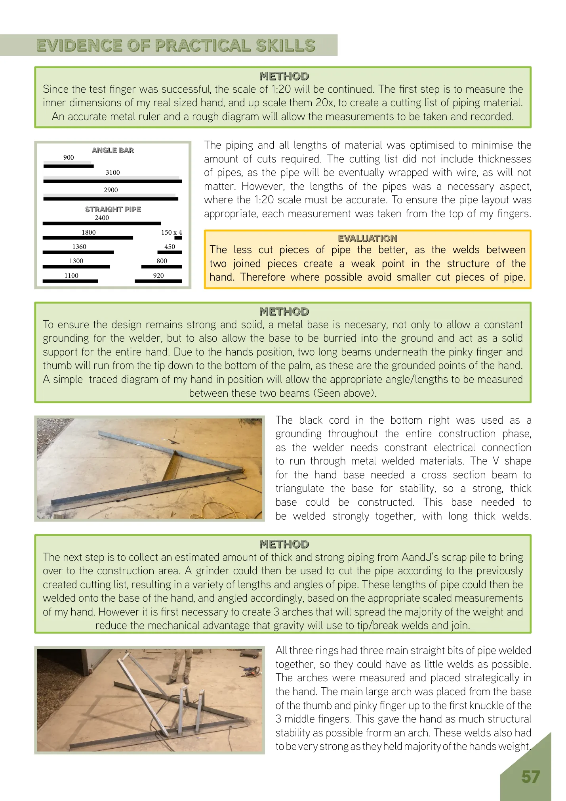

METAL / PROJECT 01
Unearthed
Sculptural
Entrance.
A hand extended in welcome. A sculptural entrance designed to reflect the resilience and generosity of a community.

01 / The finished work
Unearthed began as my Year 12 Design and Technology major project, developed in response to a brief from A&J Creative for the entrance to a proposed community gathering place on the NSW Mid North Coast. The entrance needed to be unmistakable, welcoming and connected to the surrounding bushland.
Research into the local community shaped the design. Following bushfires, flooding and the disruption of COVID-19, I kept coming back to the image of a helping hand — a simple symbol of people reaching out to one another.
That idea became an oversized sculptural hand, paired with a reclaimed-timber wall carrying the name Unearthed. Together they define a point of arrival, balancing an expressive artwork with the practical language of an entrance.



Built by hand.
I started with sketches and a trial finger before building the full sculpture. A welded steel skeleton established the gesture and scale; rings and strips made from recycled fencing helped form the fingers and palm. Layers of wire then gave the framework its shape and texture.
The project was designed around salvaged materials wherever possible, including reused steel and timber. The folio records over 75% recycled or reused material and a final project cost of $968 against a $3,000 budget.
Video / Unearthed Sculptural Entrance
From the folio.
A few fragments from the original design folio: the first hand concept, the accompanying entrance signage and the practical work of developing the steel frame. Select an image to view it larger.



A project that brought together the things I enjoy most: sculpture, problem-solving, fabrication and the challenge of making an idea exist at full scale.
← BACK TO THE WORKBENCH